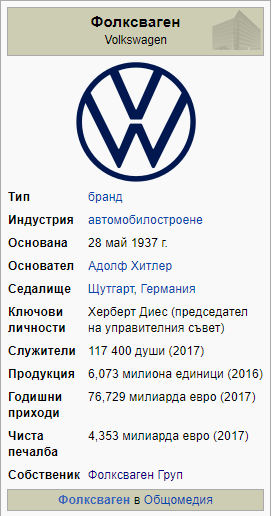
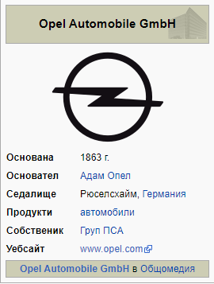
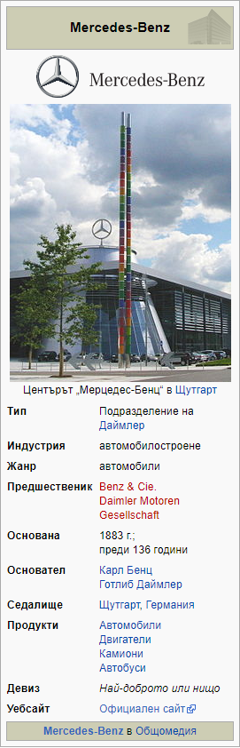

Абсолютен лидер в класация са автомобилите с марка VW, държейки над 15% пазарен дял в сраната с 425 805 регистрирани коли, но както и при общия брой коли, тук също преобладват тези с възраст над 20 години. На второ място колите с марка Opel - 351 654. В челната тройка попада и Mercedes - оказва се, че в България има регистрирани над 193 хил. автомобила от тази марка (193 486). Ето и останалите 7 най-разпространени автомобилни марки страната ни:



4 Renault 184 938
5 Audi 168 492
6 Ford 160 989
7 Peugeot 152 850
8 BMW 138 857
9 Toyota 105 982
10 Fiat 100 201
От данните на МВР се вижда, че все ще има доста автомобили, съветско производство – Волга, Москвич, Лада, Чайка, Варшава, Булгаррено, Застава, Вартбург и Трабант.
Не по-малко обаче са супер луксозните автомобили с марките Ferrari, Porsche, Bentley, Maserati, Rolls-Royce, Lamborghini и Aston Martin.
Статистиката показва още, че в България има регистрирани близо 600 електрически коли. С марка Tesla са регистрирани 67 автомобила.
Source: https://www.vesti.bg/tehnologii/avtomobili/koi-sa-naj-populiarnite-marki-avtomobili-u-nas-6089173